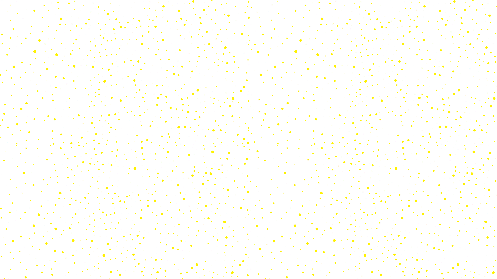
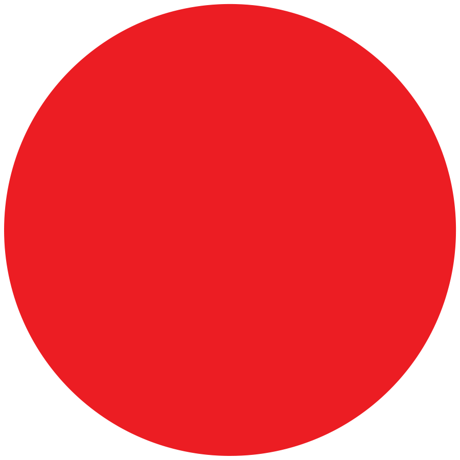
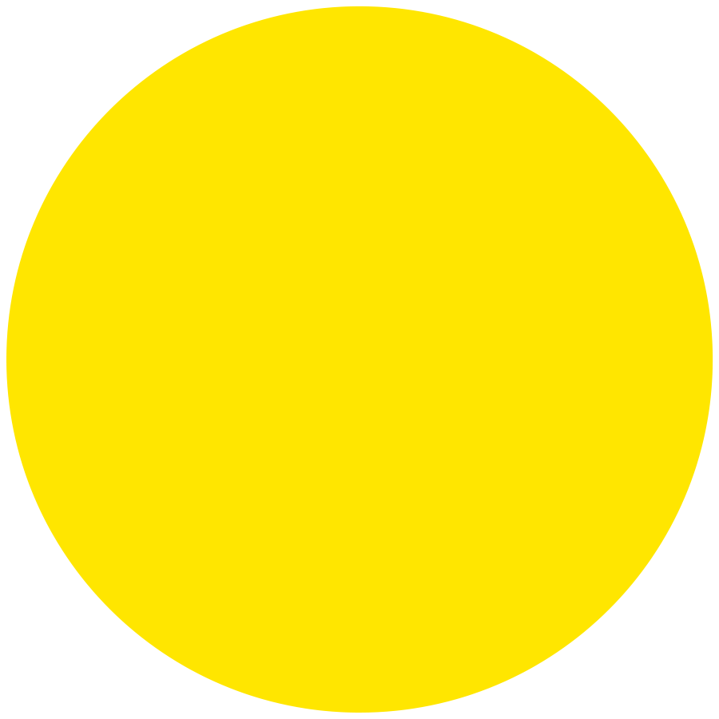

Personal project inspired by Mondrian, white space, Bauhaus and astronaut aesthetic. Started in 2013, it's sort of an ongoing project, where I occasionally get struck by inspiration and publish something new.
Back in 2013, when I was still a junior designer, the company I was working for moved premises to a beautifully refurbished studio. I was inspired to create a few graphics that would look great on the fresh white walls but would also compliment the restored original ceilings (pictured below). Since I had so much white to play with, my mind always saw spots of intense colour everywhere (you might be thinking of synesthesia here, but sadly, it wasn't that), it felt like the possibilities were endless.
Inspired in the beginning, by Mondrian's use of colour blocks, I pivoted towards the graphical black and white aesthetic of astronauts as a theme of creative exploration and brought to life by intense colour backgrounds. Little did I know, this little creative endeavour of mine, would remain an obsession, years later.




At the beginning of 2019, I came across my old astronaut original artwork on a forgotten back-up driver (always back-up your work) and I was instantly inspired to continue the series. I decided this time to put the artwork up on Redbubble and Society6, were I occasionally sell all sorts of beautiful astro objects, from pillows to backpacks and what not. If you'd like to see some examples, check my work out at Creative Rirah below: